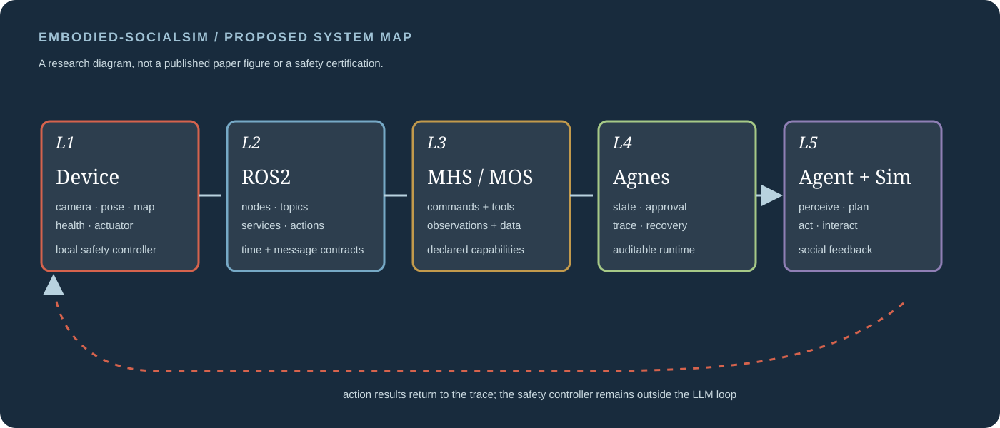
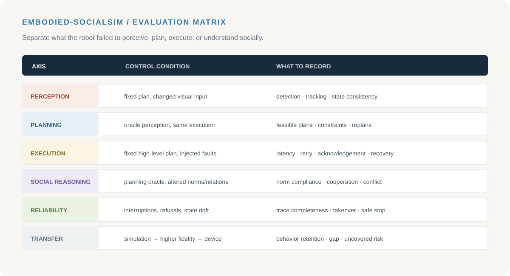

RESEARCH BRIEF
一句话定义
把设备、观测、Agent 运行时、规划执行和行为轨迹放到同一条可恢复、可审计链路，再用社会情境把具身 Agent 的失败暴露出来。
COMPLETED PROJECT 02 · EMBODIED SYSTEM · DETAILED STUDY
Embodied-SocialSim 已完成一套面向设备接入的具身 Agent 项目系统包：5 层架构、4 类设备协议对象、Agnes Harness 运行治理、视觉/YOLO、ROS2、MHS/MOS、规划执行、轨迹恢复和 6 轴评测矩阵。社会仿真被用作具身行为压力测试场，而不是社会事件预测项目。
RESEARCH BRIEF
把设备、观测、Agent 运行时、规划执行和行为轨迹放到同一条可恢复、可审计链路，再用社会情境把具身 Agent 的失败暴露出来。
COMPLETED SYSTEM POSITION
项目主线是设备可接入的具身 Agent 系统；Harness 管理高层任务和工具治理，设备控制器负责实时安全；社会仿真作为行为评测环境，和 SocietyBench 的事件预测线分开。
01 / WHY AN EMBODIED RUNTIME
项目已将具身 Agent 的关键问题拆成状态连续性、行动治理和失败归因 3 个核心模块：系统持续记录设备状态、观测、动作结果和环境反馈，并让审批、轨迹和恢复成为运行时的一部分，而不是一次性 demo 的附属日志。
把设备状态、传感器观测、任务历史和上一动作的结果放到可追踪上下文，而不是每次调用都从零开始。
模型提出计划不等于动作已经授权；工具审批、动作约束、日志和停止路径必须独立存在。
把视觉、导航、规划、社会推理和控制失败拆开，才知道应该改哪个模块。
02 / SYSTEM LAYERS
| 层 | 输入 / 输出 | 研究关注 | 硬边界 |
|---|---|---|---|
| L1 设备 | 传感器、位姿、健康状态、执行器结果 | 状态是否真实、及时、可恢复 | 实时安全由本地控制器负责 |
| L2 ROS2 | node、topic、service、action、parameter | 模块替换、时序、记录和调试 | 通信通畅不等于策略正确 |
| L3 MHS/MOS | MHS 命令 / 工具；MOS 观测 / 数据源 | 设备能力是否被明确声明和授权 | 高层 Agent 不直接绕过设备治理 |
| L4 Harness | 会话、任务状态、审批、事件账本、恢复 | 行动是否可审计、可暂停、可重放 | 不替代本体控制和安全认证 |
| L5 Agent + 环境 | 计划、行动、环境反馈、社会状态 | 感知—决策—执行的行为质量 | 仿真结果不能直接等同真实部署 |

03 / WHAT AGNES HARNESS DOES
根据公开文档，Harness 的价值在于把模型的“想做什么”和系统的“允许做什么、实际做了什么、之后能否恢复”分开。Embodied-SocialSim 借用这种职责划分，把视觉、规划和设备适配器做成可替换模块，而不是把所有逻辑写成单次模型调用。
保存目标、阶段、最近观测、动作结果和会话历史，支持多步任务而非孤立请求。
模型只能提出工具调用；系统根据声明、权限和当前状态决定是否执行。
记录观测、计划、工具、结果、异常和恢复，让失败定位可以回到中间步骤。
把暂停、重试、回滚、人工接管和重新规划作为显式状态，而不是异常日志。
视觉、ROS2 适配器、导航和执行器可以按设备替换，避免与单一模型绑定。
把每一次行动变成可检索轨迹，支持不同 Agent、策略和设备的同条件比较。
observation → state_update → plan_request
→ policy / approval check
→ tool_call(MHS) → controller
→ action_result + MOS observation
→ trace_ledger → recovery_or_next_step
04 / DEVICE PROTOCOL AND DATA CONTRACT
项目已经冻结观测和行动的数据契约：所有记录都有版本、时间、来源和结果引用，用来回答“模型看到了什么”“动作针对哪个状态”“设备是否真的执行”“恢复发生在什么位置”。
| 记录 | 最小字段 | 用途 |
|---|---|---|
| Observation | timestamp、source、frame_id、payload、quality、calibration | 保证视觉/位姿/健康状态有时间和来源。 |
| ActionRequest | task_id、tool、args、preconditions、risk_level、timeout | 让工具调用可审批、可拒绝和可复盘。 |
| ActionResult | accepted、started、finished、status、error、controller_ref | 区分“提出动作”“动作开始”“动作完成”。 |
| Recovery | trigger、safe_state、retry_policy、human_override、resume_point | 把中断和恢复从异常分支变成可评测行为。 |
05 / SOCIAL SIMULATION
真实社会环境难以重复、难以精确标注，也无法随意改变规范和关系。仿真环境的作用是把这些变量显式化：同一个机器人任务可以在不同关系、规范、冲突和群体反馈下重放，用来观察 Agent 是否更新状态、改变计划并保持行动可解释。
角色具有目标、能力、可见信息和历史关系；信任、协作和冲突会随互动更新。
环境可以改变允许的动作、角色期待和资源分配，观察 Agent 是否识别规范变化。
请求、阻碍、误解和群体反应进入下一轮观测，而不是作为一次性 prompt 背景。
06 / EVALUATION MATRIX
| 轴 | 问题 | 控制条件 | 指标示例 |
|---|---|---|---|
| Perception | 是否从视觉和传感器获得正确状态？ | 固定导航和规划，替换感知输入 | 检测、跟踪、状态一致性、遮挡恢复 |
| Planning | 是否把状态转成可行计划？ | 提供 oracle perception，保持设备执行一致 | 计划可行率、约束违反、重规划次数 |
| Execution | 工具和设备是否按预期运行？ | 固定高层计划，测试不同通道和设备条件 | 延迟、成功率、丢包、动作确认、恢复 |
| Social reasoning | 是否理解角色、规范、关系和反馈？ | 用 Planning Oracle 或简化导航排除底层干扰 | 规范遵循、协作收益、冲突处理、状态更新 |
| Reliability | 系统是否可审计、可恢复、可复现？ | 注入中断、错误观测、工具拒绝和状态漂移 | 轨迹完整性、恢复成功率、人工接管率 |
| Transfer | 仿真中的结论能否迁移？ | 从仿真到硬件/高保真环境分阶段验证 | 行为保持率、差异类型、未覆盖风险 |
没有持久状态、审批和恢复记录的单次调用。
加入状态、工具治理、轨迹和恢复，但不改变模型。
将设备、视觉、运行时和社会情境放入同一评测协议。

07 / RELATED WORK
08 / RISKS AND DELIVERY NOTES
设备状态、ROS2 消息和 MHS/MOS schema 改变会让实验不可复现；需要版本化接口和回放数据。
仿真角色的行为规则可能把研究者假设伪装成真实社会规律；需要明确可控变量和外部验证。
Agent 通过一致性测试不等于设备安全；任何高风险动作都需要控制器约束和人工接管路径。
底层导航或视觉错误会污染社会推理分数；需要 oracle、对照环境和逐层指标。
仿真中的规范遵循可能无法迁移到真实设备；要报告迁移失败，不只挑成功案例。
完整事件账本会带来存储、隐私和分析成本；需要分层日志、脱敏和可检索摘要。
完成 Device、ROS2、MHS/MOS、Harness、Agent/环境的职责划分。
完成 Observation、ActionRequest、ActionResult、Recovery 数据契约。
完成感知、规划、执行、社会推理、可靠性和迁移评测方案。
SOURCES / RESEARCH NOTES